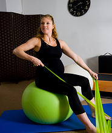
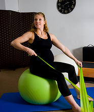

Frequently Asked Questions
Need to know a little more about Pre and Postnatal Pilates?
-
Is it safe to start Pilates while I am pregnant?
Absolutely. Pilates is perfectly safe to do during pregnancy. It is a great idea to keep your body in top shape during
the pregnancy and to help recovery after the baby is born. The sooner you start the better. However if you have had a
history of miscarriages or prior complications during a pregnancy it is best to consult with your midwife/doctor before
you start.
-
Is Yoga or Pilates best during pregnancy?
Both Pilates and Yoga help prepare the mind and body for pregnancy and birth using breathing techniques and specific
exercises to open the hips and strengthen the core. Neither one is better than the other and it comes down to personal
preference. Yoga and Pilates are very complimentary to each other and if you can why not do both.
-
How much are the classes?
Classes are R100 per class. Fees are paid in advance for 4 weeks. It is up to you how many classes you are able to
attend in the week.
-
Will Pilates help me to not pick up weight?
It is normal and healthy to pick up weight during your pregnancy. Your midwife/doctor will be able to work out how
much weight you should pick up based on your usual weight. Pregnancy is a time to embrace the changes that happen
to your body.
-
When can I start Pilates after I have had the baby?
It is recommended you start Pilates 6 weeks after the birth of the baby. If the baby was born via Caesarian Section
please wait until the incision has healed and your have gotten clearance from your doctor.
 
